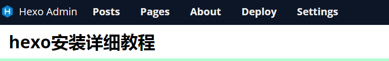

hexo安装需要git环境和node.js环境，这里以centos 7为例，以root用户登录。
安装git
1 | yum install git-core #安装git |
用nvm管理node.js
curl:
1 | curl https://raw.github.com/creationix/nvm/v0.33.11/install.sh | sh |
wget:
1 | wget -qO- https://raw.github.com/creationix/nvm/v0.33.11/install.sh | sh |
任选以上任何一种方式安装nvm，安装完成以后重启服务器，执行以下命令安装node.js
1 | nvm install stable |
至此，所依赖的环境安装完成，执行node -v命令可查看当前node.js版本。
1 | npm install -g hexo-cli |
1 | cd /usr/local #进入目录 |
以上操作都完成以后,在/usr/local/hexo-site目录下执行
1 | hexo g #生成静态文件 |
这里以minos主题为例,github链接。
1 | cd /usr/local/hexo-site/themes #进入博客目录的主题文件夹 |
上面就完成了主题的安装，当然主题的配置文件_config.yml有更详细的配置，请参考github上的指导。
接下来就是使用主题
1 | cd /usr/local/hexo-site |
把配置文件中的theme: landscape这一行改为theme: minos,然后在博客目录执行hexo g和hexo s分别编译和启动博客程序即可。
注意: 这里会有以下提醒
ERROR Package hexo-renderer-sass is not installed.
ERROR Please install the missing dependencies in the root directory of your Hexo site.
这是因为博客主题minos需要安装hexo-renderer-sass插件，只要在博客目录(/usr/local/hexo-site）执行以下命令即可安装
1 | npm install --save hexo-renderer-sass |
之后再按照上面重新编译和启动博客就不会报错了。
关于minos主题的一些配置及使用方式，以后有机会可以专门写一篇文章介绍。
这是一款插件,地址在这里。
进入到博客的主目录/usr/local/hexo-site
执行以下命令
1 | npm install --save hexo-admin #安装插件 |
安装完成以后正常启动hexo s即可，可在博客主页路径之后加上/admin即可访问管理后台。
菜单大概是这个样子，如下图:

这里对图中的菜单做下简单说明:
Posts: 文章管理
Pages: 页面管理，主要是一些关于页面之类
About: hexo-admin插件的一些信息
Deploy: 自动发布博客，这个后面会详细介绍
Settings: 插件的一些设置，设置密码登录就可以参考这里
接下来主要讲一下在线发布和设置用户密码。
1.在线发布
deploy的输入位置是对应hexo-admin配置里面的deployCommand项，如果配置里面已经配置了该项，则这里不用输入任何文字，直接点击Deploy按钮即可完成在线发布。
示例:
1 | admin: |
这样，只要在博客主目录/usr/local/hexo-site下，有名为hexo-deploy的脚本就可以了。
脚本内容可以参考下面:
1 | hexo clean && hexo g |
这里只是清除及重新编译生成博文。这里的脚本是可以根据需求自己定义的。但是这里的hexo-deploy需要有可执行权限。(chmod +x hexo-deploy)
2.设置用户名密码
进入后台管理Settings->Setup authentification 菜单,如下图:
填写相关配置，然后把红框部分的内容复制下来配置到博客主目录的_config.yml文件(不是主题目录下的_config.yml)末尾即可。
结合第1点在线发布，完整的配置应该如下:
1 | admin: |
修改完配置，保存重启博客即可，再次登录后台则需要输入用户名密码。
官方建议是hexo s &命令运行则是后台启动，但是实际体验下来还是会莫名其妙死掉进程。参考了这篇文章链接。
安装pm2
1 | npm install -g pm2 |
然后在博客根目录创建一个脚本hexo_run.js,内容如下:
1 | const { exec } = require('child_process') |
最后在根目录运行如下命令即可后台启动hexo程序
1 | $ pm2 start hexo_run.js |
可通过命令netstat -apn | grep hexo来查看当前hexo进程。
插件地址github
在博客根目录执行以下命令安装
1 | $ npm install --save hexo-helper-live2d@3.x |
安装完成以后编辑博客根目录的_config.yml文件，在最后加如下配置
1 | live2d: |
重新编译博客即可。